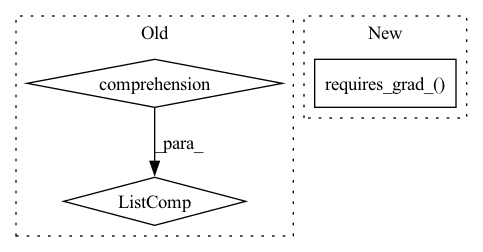

Pattern ID :26626
Before Change
x = x.to(self.device)
x = self.layers(x)
else:
x = [y.to(self.device) for y in x]
x = self.layers(*x)
// Last partition outputs results in a non tensor format
if not isinstance(x, Tensor):After Change
x = self.layers(x)
else:
for tensor in x:
tensor.detach_().requires_grad_()
self.input_buffer[micro_batch_idx] = x
x = self.layers(*x)
else:
with torch.no_grad():In pattern: SUPERPATTERN
Frequency: 3
Non-data size: 3
Instances Fragment ID: 79679292
Project Name: saareliad/ftpipe
Commit Name: 1eba81f7408b3aca28864f904c0c65ca860f6e3c
Time: 2019-11-28
Author: saareliad@campus.technion.ac.il
File Name: communication/partition.py
M Class Name: LastPartition
N Class Name: LastPartition
M Method Name: forward(3)
N Method Name: forward(3)
M Parent Class: Partition
N Parent Class: Partition
M File Name: communication/partition.py
N File Name: communication/partition.py
M Start Line: 131
M End Line: 154
N Start Line: 141
N End Line: 162
Before Change
x = self.layers(x)
else:
// FIXME: explicitly creating new objects
x = [y.detach().to(self.device).requires_grad_()
for y in x]
self.cache_input[micro_batch_idx] = x
x = self.layers(*x)
return x
else:After Change
with torch.no_grad():
if isinstance(x, Tensor):
x.detach_().requires_grad_()
self.input_buffer[micro_batch_idx] = x
x = self.layers(x)
else:
for tensor in x: Fragment ID: 79679291
Project Name: saareliad/ftpipe
Commit Name: 1eba81f7408b3aca28864f904c0c65ca860f6e3c
Time: 2019-11-28
Author: saareliad@campus.technion.ac.il
File Name: communication/partition.py
M Class Name: Partition
N Class Name: Partition
M Method Name: forward(3)
N Method Name: forward(3)
M Parent Class: nn.Module
N Parent Class: nn.Module
M File Name: communication/partition.py
N File Name: communication/partition.py
M Start Line: 76
M End Line: 92
N Start Line: 87
N End Line: 93
Before Change
create_graph=False, // 最终loss里包含梯度，需要求梯度的梯度，所以肯定需要建立反向图。
retain_graph=True)
pl_grads = pl_gradss[0]
pl_gradss = [aaa.numpy() for aaa in pl_gradss]
// pl_mean = self.pl_mean.lerp(pl_lengths.mean(), self.pl_decay)
// self.pl_mean.copy_(pl_mean.detach())
pl_mean = self.pl_mean + self.pl_decay * (pl_lengths.mean() - self.pl_mean)After Change
if do_Dmain or do_Dr1:
name = "Dreal_Dr1" if do_Dmain and do_Dr1 else "Dreal" if do_Dmain else "Dr1"
real_img_tmp = real_img.detach().requires_grad_( do_Dr1)
real_logits = self.run_D(real_img_tmp, real_c, sync=sync)
loss_Dreal = 0
if do_Dmain: Fragment ID: 79679290
Project Name: miemie2013/miemiegan
Commit Name: 0ad2483396ab17c9512db493c01be594f47431b0
Time: 2022-02-23
Author: 53960695+miemie2013@users.noreply.github.com
File Name: mmgan/models/architectures/styleganv2ada_model.py
M Class Name: StyleGANv2ADAModel
N Class Name: StyleGANv2ADAModel
M Method Name: accumulate_gradients(8)
N Method Name: accumulate_gradients(8)
M Parent Class: torch.nn.Module
N Parent Class: torch.nn.Module
M File Name: mmgan/models/architectures/styleganv2ada_model.py
N File Name: mmgan/models/architectures/styleganv2ada_model.py
M Start Line: 163
M End Line: 264
N Start Line: 150
N End Line: 231